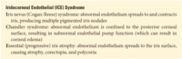

Age-Related Changes
As a result of aging, the conjunctiva loses transparency and becomes thinner. The substantia propria (stroma) becomes less elastic, causing conjunctival laxity. In older individuals, the conjunctival vessels may become more prominent. The vessels may show saccular telangiectasias, fusiform dilatory changes, or tortuosities. These changes are not necessarily uniform; they tend to be more pronounced in the region of the interpalpebral zone (also called interpalpebral or palpebral fissure), corresponding to the area most exposed to the environment.
Pinguecula
clinical presentation A pinguecula is a common conjunctival condition that occurs typically on the nasal side of the bulbar conjunctiva, adjacent to the limbus in the interpalpebral zone. It is usually bilateral and appears as a yellowish elevated mass (Fig 6-1), which may gradually enlarge. Affected patients may have recurrent inflammatory episodes known as pingueculitis.
pathogenesis Pingueculae occur as a result of the effects of aging, UV light exposure, and environmental insults such as dust and wind. Histologic examination demonstrates elastotic degeneration (the material stains for elastin but is not broken down by elastase) of subepithelial collagen with hyalinized connective tissue.
management Topical lubrication to alleviate ocular irritation associated with pingueculitis is the mainstay of treatment. For patients with associated inflammation, judicious use of topical corticosteroids may be considered; however, long-term corticosteroid therapy for pingueculae is strongly discouraged because of the associated adverse effects. Excision is indicated when pingueculae become chronically inflamed, are refractory to topical therapy, or interfere with contact lens wear. Excision is not typically performed for cosmesis.
Pterygium
clinical presentation A pterygium is a wing-shaped fibrovascular growth of conjunctiva that extends onto the superficial nasal and/or temporal cornea (Fig 6-2). As the pterygium progresses toward the visual axis, it induces visually significant regular and irregular astigmatism and scarring. Patients may report ocular irritation. A pigmented iron line (Stocker line) may be seen in the corneal epithelium, just central to the edge of the pterygium (Fig 6-3). The prevalence of pterygium is higher among people in equatorial regions and in people who work or recreate outdoors, owing to increased UV light exposure. The onset of the condition is typically between the ages of 20 and 30 years.
A pterygium must be distinguished from a pseudopterygium, which may occur after trauma or chemical burns or secondary to inflammatory corneal disease. Calcifications, leukoplakia, atypical elevation, irregular feeder vessels, and rapid growth are not typical of pterygia and may alert the clinician to the possibility of a malignancy. High-resolution anterior segment optical coherence tomography can help in differentiating a pterygium from ocular surface squamous neoplasia (OSSN). Marked thickening of the epithelium, which is typical of OSSN, is not characteristic of pterygia (Fig 6-4). See BCSC Section 4, Ophthalmic Pathology and Intraocular Tumors, for further discussion.
pathogenesis The pathogenesis of pterygium is strongly correlated with UV light exposure, although environmental factors such as chronic exposure to dust, wind, or other irritants may contribute as well. In addition, there may be a genetic predisposition to pterygium development. Histologically, a pterygium is similar to a pinguecula (basophilic degeneration of elastotic fibers), except that a pterygium invades the superficial cornea.
management Prophylactic treatment includes wearing UV-blocking sunglasses and a broad-brimmed hat, especially for patients chronically exposed to the sun. Medical treatment with artificial tears can alleviate associated ocular irritation. Topical corticosteroids, used on a short-term basis for pterygia, can be helpful, but long-term use is not advisable. Excision is indicated if the pterygium decreases vision because of induced irregular astigmatism, or if the pterygium causes persistent irritation, exhibits progressive growth that threatens the visual axis, or restricts ocular motility. Patients in certain occupations (eg, modeling or television performance) may desire removal for aesthetic reasons. To reduce the recurrence rate, most clinicians prefer to cover the bare sclera with tissue (eg, conjunctival autograft) at the time of surgery. See Chapter 5 for surgical management.
In patients with visually significant cataract and pterygium, a staged surgical approach is indicated. Cataract surgery is recommended after the pterygium is excised and the corneal contour has stabilized (typically 3 months). This approach can lead to improved long-term refractive results (Fig 6-5).
Conjunctival Concretions
Concretions are small cystic lesions containing epithelial and keratin debris, glycosaminoglycans (previously called mucopolysaccharides), and mucin. This common condition is often best seen when the eyelid is everted. Concretions are visible as small, yellow-white dots in the palpebral conjunctiva (Fig 6-6) of older patients or patients who have had chronic conjunctivitis or meibomian gland dysfunction. Concretions are almost always asymptomatic, but they may erode through the overlying epithelium, causing foreign-body sensation. When symptomatic, concretions can be easily removed at the slit lamp with topical anesthesia and a 25-gauge needle.
Conjunctival Epithelial Inclusion Cysts
clinical presentation Conjunctival epithelial inclusion cysts are clear or transilluminating lesions that appear in either the bulbar conjunctiva or the conjunctival fornix and are typically incidental findings on examination. Conjunctival inclusion cysts can be congenital or acquired. Cysts can also result from chronic inflammation, trauma, or surgery. Dilated lymphatic channels may mimic a chain of inclusion cysts of the bulbar conjunctiva.
pathogenesis Most acquired cysts of the conjunctiva are derived from an inclusion of conjunctival epithelium within the substantia propria. The implanted cells proliferate to form a central fluid-filled cavity that is lined with nonkeratinized conjunctival epithelium. Conjunctival cysts may also form from the ductal epithelium of accessory lacrimal glands; these cysts are lined with a double layer of epithelium.
management Because these cysts are usually asymptomatic, they generally do not require treatment. If large or elevated, a cyst can cause irritation (Fig 6-7). If the cyst is symptomatic, incision and drainage with a needle at the slit lamp may be attempted; however, the cyst may recur. Piercing the cyst in multiple locations may prevent recurrence (Video 6-1). If the cyst recurs, complete excision may be necessary.
VIDEO 6-1 Lancing of a conjunctival cyst.
Courtesy of Joseph D. Iuorno, MD.
Available at: aao.org/bcscvideo_section08
Conjunctivochalasis
Poor adherence of the bulbar conjunctiva that leads to redundancy is referred to as conjunctivochalasis. This condition is described in Chapter 4, and its treatment is discussed in Chapter 5.
Conjunctival Vascular Tortuosity and Hyperemia
There are many causes of conjunctival vascular tortuosity and hyperemia. A differential diagnosis is presented in
Table 6-1
.
For a proper diagnosis, it is important to distinguish corneal degenerations from inherited corneal dystrophies (Table 6-2).
Age-Related Changes
As a result of aging, the cornea gradually becomes flatter in the vertical meridian, thinner, more rigid, and slightly less transparent. Its refractive index increases. Descemet membrane becomes thicker, increasing from 3 µm at birth to 10–12 µm by adulthood. With increasing age, occasional peripheral endothelial guttae, known as Hassall-Henle bodies, may form (discussed later in this chapter). Age-related attrition of corneal endothelial cells results in a reduction in cell density from about 4000 cells/mm2 at birth to about 2300 cells/mm2 at 85 years of age.
Epithelial and Subepithelial Degenerations and Depositions
Coats white ring
Coats white ring is a small (≤1 mm in diameter) circular or oval-shaped opacity that consists of iron-containing fibrotic remnants of a metallic foreign body and is visible as discrete gray-white dots in the superficial corneal stroma (
Fig 6-8
). Once these lesions mature and are free of any associated inflammation, they do not change. Therapy with corticosteroids or other anti-inflammatory agents is not beneficial. These lesions should be distinguished from corneal facets, which are small, gray-white, epithelium-filled defects in the anterior stroma.
Spheroidal degeneration
Spheroidal degeneration (also called actinic keratopathy, climatic droplet keratopathy, Bietti nodular dystrophy, and Labrador keratopathy) is characterized by the appearance of translucent, golden-brown spheroidal deposits in the superficial stroma, at Bowman layer, and/or in the anterior stroma (Fig 6-9A). The conjunctiva can also be involved. Despite its appearance, the brown deposit is not lipid but rather proteinaceous material (Fig 6-9B).
Primary spheroidal degeneration The deposits are bilateral and initially located in the nasal and temporal cornea. With age, they can extend onto the conjunctiva in the interpalpebral zone. In rare cases, generally in childhood, the spheroidal deposits extend across the interpalpebral cornea, producing a noncalcific band-shaped keratopathy. The primary degeneration is unrelated to coexisting ocular diseases. The etiology is controversial, but cumulative evidence suggests that the deposits may develop from UV radiation–induced alteration of preexisting structural connective tissue components or from the synthesis of abnormal extracellular material in limbal conjunctiva.
Secondary spheroidal degeneration This degeneration is associated with ocular injury or inflammation. The deposits aggregate near the area of corneal scarring or vascularization. All cases show extracellular proteinaceous, hyaline deposits with characteristics of elastotic degeneration. These deposits are thought to be secondary to the combined effects of genetic predisposition, actinic exposure associated with temperature extremes, aging, and perhaps various environmental factors, such as dust and wind.
Medical therapy is of little value, but ocular lubrication may help address uneven layering of the tear film over affected areas. In cases of central corneal involvement, superficial keratectomy, phototherapeutic keratectomy (PTK) using an excimer laser, or lamellar keratoplasty may be indicated.
Iron deposition
Iron lines are generally related to pooling of tears near areas of ocular surface irregularity (Fig 6-10; see also Fig 6-3). The iron is deposited at the level of the basal epithelium. An iron line surrounding an elevated corneal lesion indicates that the lesion has been present for some time. Visualization of an iron line at the slit lamp is enhanced by using a broad oblique beam or diffuse illumination with the cobalt blue filter before instilling fluorescein.
A Fleischer ring is due to iron deposition in the basal layer of the corneal epithelium. It occurs at the base of the cone in keratoconus and becomes narrower and more prominent with disease progression (see Chapter 9, Fig 9-4). The Fleischer ring should not be confused with the Kayser-Fleischer ring, a variously colored ring that is due to deposition of copper at the level of Descemet membrane and is often seen in hepatolenticular degeneration (Wilson disease) (see Chapter 10). The Fleischer ring is an important diagnostic sign in keratoconus and can also aid in complete cone removal during keratoplasty. The Hudson-Stähli line is a linear horizontal opacity generally located at the junction of the upper two-thirds and lower one-third of the cornea; it is likely related to pooling of tears on the lower eyelid. Iron lines are also associated with keratorefractive surgery (LASIK line), particularly with radial keratotomy. Various corneal iron lines are summarized in Table 6-3 and illustrated in Figure 6-11. In general, iron lines do not require treatment, although they can alert the clinician to underlying pathology that may require intervention.
Calcific band keratopathy
clinical presentation Calcific band keratopathy (also called band keratopathy) is a degeneration of the superficial cornea that involves mainly Bowman layer. These changes are usually first seen peripherally at the 3- and 9-o’clock positions. Eventually, the calcium deposits may coalesce to form a dense horizontal band of plaques or large calcific plates across the interpalpebral zone (Fig 6-12). There is often a clear zone between the lesion and the limbus. In later stages, small cracks can occur in the band as a result of fractures in the calcium deposits. In addition, small, lucent holes can be observed throughout the opacity, resembling the appearance of Swiss cheese and resulting from the penetration of corneal nerves through Bowman layer.
pathogenesis Common causes of band keratopathy are listed in
Table 6-4
. Band keratopathy begins as fine, dustlike, basophilic deposits at the level of Bowman layer and can be idiopathic, confined to the eye as a consequence of ocular disease, or a manifestation of systemic disease. Band keratopathy may also result from the deposition of urate in the cornea. The urates appear brown, unlike the gray-white calcium deposits observed in band keratopathy, and they may be associated with gout or hyperuricemia.
management To rule out associated metabolic or renal disease, the clinician may conduct a basic workup in conjunction with the patient’s primary care physician:
- serum calcium/phosphorus/uric acid
- blood urea nitrogen (BUN)/creatinine
- parathyroid hormone level
- urinalysis (checking for crystals, pH)
- angiotensin-converting enzyme (ACE) and serum lysozyme levels (particularly if sarcoidosis is suspected)
- chest x-ray (if sarcoidosis is suspected)
To reduce or slow the deposition of calcium, it is important to treat or control any underlying conditions, such as keratoconjunctivitis sicca or renal failure, to the extent possible; this may reduce the recurrence of band keratopathy after treatment. A combination of mechanical and chemical chelation with a neutral solution of either disodium or dipotassium EDTA can be used to remove the calcium. A concentration of Na2EDTA (0.05 mol/L) 1%–4% can be obtained through a compounding pharmacy. K2EDTA can be prepared by the physician by injecting sterile water into a K2-EDTA-containing blood collection tube. The epithelium overlying the calcium is removed before the chelating solution is applied. One option for applying EDTA is to use any cylindrical tube that approximates the diameter of the area to be treated as a reservoir to confine the chelating solution. Alternatively, an EDTA-soaked cellulose sponge can be used to gently rub the affected area. A bandage contact lens is left in place and the patient is treated with topical antibiotic and steroid until the epithelium has healed. Topical cycloplegia can help control postoperative discomfort.
Occasionally, calcium plaques can form on the cornea, which can cause foreign-body sensation. These plaques can be removed at the slit lamp with forceps. Corneal epithelium will not grow over a calcium plaque. A fibrous pannus may accompany extensive calcific band keratopathy, especially if intracameral silicone oil is the underlying cause. PTK using an excimer laser is not advised as primary treatment, because calcium ablates at a different rate than stroma, which may result in a severely irregular surface. If there is residual opacification after the initial EDTA chelation, PTK may be considered. Band keratopathy can recur if the underlying ocular or systemic condition persists. EDTA chelation may be repeated for residual opacification or recurrence. Continued follow-up of these patients is advised.
Jhanji V, Rapuano CJ, Vajpayee RB. Corneal calcific band keratopathy. Curr Opin Ophthalmol. 2011;22(4):283–289.
Lee ME, Ouano DP, Shapiro B, Fong A, Coroneo MT. “Off-the-shelf” K2-EDTA for calcific band keratopathy. Cornea. 2018;37(7):916–918.
Reidy JJ. Corneal and conjunctival degenerations. In: Mannis MJ, Holland EJ, eds. Fundamentals, Diagnosis and Management. 5th ed. Elsevier; 2022:784–801. Cornea; vol 1.
White limbal girdle of Vogt
Two forms of the white limbal girdle of Vogt have been described:
- Type I is a narrow, whitish superficial band concentric with the limbus within the interpalpebral zone and is generally thought to represent early calcific band keratopathy. A clear zone appears between the limbus and the girdle. This girdle is a degenerative change at the level of Bowman layer with chalklike opacities and small clear areas, as seen in band keratopathy.
- Type II consists of small, white, needlelike flecks that are often seen at the nasal and temporal limbus in older patients. No clear interval separates these lesions from the limbus (Fig 6-13). Histologic examination reveals elastotic degeneration of collagen, similar to the changes seen in pingueculae.
Neither type I nor type II lesions are sight threatening, and no treatment is required.
Salzmann nodular degeneration
clinical presentation Salzmann nodular degeneration is a slowly progressive noninflammatory degenerative corneal condition characterized by the presence of elevated, nodular gray-white or blue-white subepithelial opacities (Fig 6-14A), typically in the paracentral cornea. The condition is usually bilateral and is generally seen in middle-aged and older women.
Salzmann nodular degeneration is often idiopathic. It can also be associated with dry eye, exposure, or long-standing keratitis (eg, phlyctenulosis, trachoma, or interstitial keratitis); in such cases, the nodules are often observed at the ends of vessels associated with a pannus. The degeneration may not appear until years after active keratitis has subsided. In patients who wear hard contact lenses, subepithelial fibrosis can also occur at the 3- and 9-o’clock positions.
A variant of Salzmann nodular degeneration, peripheral hypertrophic subepithelial corneal degeneration, has also been described (Fig 6-14B). It is most common in women and is typically bilateral, peripheral, and symmetric. Adjacent superficial limbal vascularization with occasional pseudopterygium has been noted. Underlying chronic ocular surface inflammation is absent.
pathogenesis Histologic examination reveals nodular, sclerotic subepithelial collagenous material resembling the basement membrane, along with a disrupted or absent Bowman layer. Confocal microscopy reveals elongated basal epithelial cells and activated keratocytes in the anterior stroma near the nodules.
management For mild cases, treatment is topical lubrication. Manual superficial keratectomy may be indicated in more severe cases associated with decreased vision due to irregular astigmatism, photophobia, and/or irritation. The simplicity of the surgical procedure used depends on the ability to find the correct corneal tissue plane. Once this plane is discovered by gently scraping with a rounded microsurgical Tooke blade, the nodule can be peeled off with a jeweler’s forceps (Fig 6-14C, Video 6-2). This degeneration may recur. PTK has also been used to treat this condition but may result in an irregular corneal contour or an undesirable refractive outcome.
VIDEO 6-2 Superficial keratectomy of Salzmann nodule.
Courtesy of Joseph D. Iuorno, MD.
Available at: aao.org/bcscvideo_section08
Auteri N, Presa M, Pierson K, Kurji K, Cheung A, Holland E. Peripheral hypertrophic subepithelial corneal degeneration versus Salzmann’s nodular degeneration: a clinical
and surgical comparison. Ocul Surf. 2022;23:71–73.
Maharana PK, Sharma N, Das S, et al. Salzmann’s nodular degeneration. Ocul Surf. 2016;14(1):20–30.
Midstromal and Deep Stromal Degenerations and Depositions
Corneal arcus
Corneal arcus is usually an involutional change that is modified by genetic factors and caused by the deposition of lipid in the peripheral corneal stroma. The lipid is concentrated at 2 levels: (1) adjacent to Bowman layer and (2) near Descemet membrane. A relatively clear zone is present between the peripheral edge of the arcus and the limbus because Bowman layer does not reach the limbus, and the insertion of Descemet membrane is at Schwalbe line. The arcus has a hazy white appearance, a sharp outer border, and an indistinct central border; it is denser superiorly and inferiorly (Fig 6-15). The arcus starts at the inferior and superior aspects of the cornea and ultimately involves the entire circumference.
The prevalence of corneal arcus is increased in African American individuals and in males; it also increases with age. Most patients older than 80 years have corneal arcus. Corneal arcus may also occur as a congenital anomaly (arcus juvenilis). In patients younger than 40 years, the presence of arcus may be indicative of hyperlipoproteinemia with an elevated serum cholesterol level. An appropriate workup or referral is advised.
Unilateral corneal arcus is a rare condition associated with contralateral carotid artery disease or ocular hypotony. Corneal arcus is also seen in Schnyder corneal dystrophy (Chapter 8).
Crocodile shagreen
Crocodile shagreen, or mosaic degeneration, is a bilateral corneal opacity with a characteristic mosaic pattern reminiscent of a crocodile’s back. It consists of centrally located, polygonal gray opacities at the level of Bowman layer that are separated by clear zones. On histologic examination, Bowman layer is indented, forming ridges, and it may be calcified. Similar changes can occur in the deep stroma, near Descemet membrane, or in the corneal periphery. The condition is usually not visually significant.
Polymorphic amyloid degeneration
Polymorphic amyloid degeneration is a bilateral symmetric, primarily central, and slowly progressive corneal degeneration that appears later in life and is characterized by amyloid deposition. The crystalline deposits in this disorder can resemble the amyloid deposits in early lattice corneal dystrophy, but they are found primarily in the mid to deep stroma and histologically may appear to indent Descemet membrane. The opacities can appear gray-white, somewhat refractile, and crystalline in retroillumination (Fig 6-16). The intervening stroma appears clear, and unless the condition is advanced, vision is usually minimally affected. Recurrent erosions do not occur, and cataract surgery can be performed without added risk. See Chapters 8 and 10 for more information on amyloid in the cornea.
Furrow degeneration
Furrow degeneration is seen in older adults and is characterized by corneal arcus (discussed earlier) associated with peripheral thinning within the clear zone. The corneal epithelium remains intact, and there is no associated inflammation, vascularization, or potential for perforation. Vision is rarely affected, and no treatment is required. Although the thinning is generally slight, it can appear more prominent. For cases in which circumlimbal involvement eventually occurs, the cataract surgeon may consider using a scleral rather than clear corneal approach.
Terrien marginal degeneration
Terrien marginal degeneration (TMD) is a slowly progressive thinning disorder of the peripheral corneal stroma. It is usually bilateral but may be asymmetric. TMD is typically a painless condition but may be associated with inflammation. Although individuals of any age can be affected, TMD appears primarily in patients older than 40 years. Males are affected more frequently than females. The cause of this condition is unknown. The thinning typically presents superiorly but may spread circumferentially. It usually does not progress toward the central cornea but may involve the inferior limbus. Affected patients often are asymptomatic until bothered by blurred vision due to induced astigmatism.
The corneal epithelium remains intact, and a fine pannus typically traverses the area of peripheral stromal thinning. Lipid typically deposits at the central edge of the pannus (Fig 6-17). Spontaneous perforation is rare, although it can occur with minor trauma. Acute corneal hydrops can result from a rupture in Descemet membrane.
An inflammatory condition known as Fuchs superficial marginal keratitis, which occurs in children and young adults, may resemble TMD. This condition may be part of the clinical spectrum of TMD.
Terrien marginal degeneration (TMD) may be confused with peripheral ulcerative keratitis (PUK). However, in the latter, the corneal epithelium typically is not intact, and there is no lipid deposition (see , Table 9-3). This distinction is important because PUK is often associated with an underlying systemic disease, and TMD is not.
Surgical intervention is indicated when progressive thinning results in marked astigmatism that significantly affects vision or threatens perforation. Crescent-shaped lamellar or full-thickness corneoscleral patch grafts may be used. Annular lamellar tectonic keratoplasty grafts may be considered in severe cases of 360° marginal degeneration.
Chan AT, Ulate R, Goldich Y, Rootman DS, Chan CC. Terrien marginal degeneration: clinical characteristics and outcomes. Am J Ophthalmol. 2015;160(5):867–872.e1.
Ferrari G, Tedesco S, Delfini E, Macaluso C. Laser scanning in vivo confocal microscopy in a case of Terrien marginal degeneration. Cornea. 2010;29(4):471–475.
Keenan JD, Mandel MR, Margolis TP. Peripheral ulcerative keratitis associated with vasculitis manifesting asymmetrically as Fuchs superficial marginal keratitis and Terrien marginal degeneration. Cornea. 2011;30(7):825–827.
Corneal keloid
Corneal keloids are superficial, sometimes protuberant, glistening white anterior stromal masses that can involve the entire corneal surface. They are thought to be secondary to a vigorous fibrotic response to corneal injury or chronic ocular surface inflammation. Keloids can be congenital or primary, and they have been reported in association with many congenital conditions, such as oculocerebrorenal syndrome (Lowe syndrome). They have sometimes been confused with neurotrophic scars, Salzmann nodular degeneration, or dermoids. Treatment of symptomatic patients may include superficial keratectomy or penetrating or lamellar keratoplasty (see Chapter 7).
Palko JR, Arfeen S, Farooq AV, Reppa C, Harocopos GJ. Corneal keloid presenting forty years after penetrating injury: case report and literature review. Surv Ophthalmol. 2019;64(5):700–706.
Lipid keratopathy
Lipid keratopathy has 2 forms. In secondary lipid keratopathy (Fig 6-18), yellow or cream-colored lipids containing cholesterol, neutral fats, and glycoproteins are deposited in the superficial or deep stroma following corneal inflammation with vascularization (eg, as occurs in chemical injury or interstitial keratitis related to herpes keratitis or syphilis). In rare instances, lipid keratopathy has been reported with no evidence of an antecedent infection, inflammatory process, or corneal damage; such cases are described as primary lipid keratopathy. Occasionally, lipid keratopathy can be associated with focal stromal necrosis in the absence of significant inflammation.
Treatment is indicated in cases of decreased vision or compromised cosmetic appearance. Controlling the neovascularization with topical corticosteroids may reduce or even stop the progression of the keratopathy. Green laser treatment in the presence of a few isolated vessels, photodynamic therapy with verteporfin, cautery, and subconjunctival and topical bevacizumab have been reported to reduce corneal neovascularization and lipid deposition; however, the effects may be short-lived, and the effectiveness of these modalities is unclear. Recently, cannulization with embolization of the vessels has been described. Mitomycin intravascular chemoembolization (MICE) involves injecting mitomycin C into an afferent vessel to occlude it, destroy existing vessels, and prevent intrastromal neovascularization. The long-term efficacy and side effects of this technique are not yet known.
Goh YW, McGhee CN, Patel DV, Barnes R, Misra S. Treatment of herpes zoster–related corneal neovascularization and lipid keratopathy by photodynamic therapy. Clin Exp Optom. 2014;97(3):274–277.
Mimouni M, Ouano D. Initial outcomes of mitomycin intravascular chemoembolization (MICE) for corneal neovascularization. Int Ophthalmol. 2022;42:2407–2416. https://doi.org/10.1007/s10792-022-02240-6
Roshandel D, Eslani M, Baradaran-Rafii A, et al. Current and emerging therapies for corneal neovascularization. Ocul Surf. 2018;16(4):398–414.
Wu D, Chan KE, Lim BXH, et al. Management of corneal neovascularization: current and emerging therapeutic approaches. Indian J Ophthalmol. 2024;72(Suppl 3):S354–S371.
Endothelial Degenerations and Depositions
Iridocorneal endothelial syndrome
Iridocorneal endothelial (ICE) syndrome is a spectrum of disorders characterized by varying degrees of iris changes, pupillary anomalies, structural and proliferative abnormalities of the corneal endothelium, and peripheral anterior synechiae. These disorders are caused by proliferation of abnormal endothelial cells onto the cornea, angle, and iris structures. Three clinical variants of ICE syndrome have been identified. Coincidentally, I, C, and E are the first letters of each of the variants, which creates a convenient mnemonic (see the text box on the following page).

clinical presentation The first variant, iris nevus syndrome (Cogan-Reese syndrome), is characterized by the presence of multiple pedunculated or diffusely pigmented iris nodules, which are produced by the contracting endothelial membrane (Fig 6-19). When the disease is confined to the posterior corneal surface (Chandler syndrome), corneal edema may occur. Other conditions that can cause unilateral corneal edema are listed in
Table 6-5
and should be considered before Chandler syndrome is diagnosed. The contractile membranes from the spread of abnormal endothelial cells onto the iris can cause iris atrophy, corectopia, and polycoria—hallmarks of essential (progressive) iris atrophy (Fig 6-20). ICE syndrome occurs most commonly in middle-aged women and is almost always unilateral. Gonioscopy demonstrates broadened synechiae caused by proliferation and migration of abnormal endothelium over the anterior chamber angle, resulting in outflow obstruction and secondary glaucoma.
pathogenesis The pathogenesis of ICE syndrome is unknown but appears to involve abnormal proliferation of endothelial cells that have acquired the ultrastructural characteristics of epithelial cells (ICE cells). It is not clear when the abnormal cloning occurs; however, a viral etiology (herpesvirus) for ICE syndrome has been postulated, as viral DNA has been identified in some specimens following keratoplasty and in the aqueous of some patients with ICE syndrome. ICE cells seen with specular microscopy (Fig 6-21) are typically abnormal, large, rounded, and pleomorphic. They show a characteristic reversal of the normal “light–dark” pattern; thus, the surface appears dark with an occasional central light spot, and the intercellular borders appear light. In vivo confocal microscopy shows ICE cells to be pleomorphic epithelial-like endothelial cells with hyperreflective nuclei and cell borders that appear brighter than cell surfaces. Ultrasound biomicroscopy is useful for detecting changes in angle structures in ICE syndrome, especially when corneal edema does not allow visualization with gonioscopy.
management Endothelial keratoplasty is the preferred treatment of the corneal component of this syndrome unless there is significant corneal scarring, in which case penetrating keratoplasty might be more appropriate. Long-term graft clarity depends on the successful control of intraocular pressure, which can be difficult (see BCSC Section 10, Glaucoma). Medical treatment of the glaucoma can be challenging. If filtering surgery is performed, the progressive growth of the abnormal endothelial membrane can block the filtration site. Tube shunt surgery may be more successful.
Carpel EF. Iridocorneal endothelial syndrome. In: Mannis MJ, Holland EJ, eds. Fundamentals, Diagnosis and Management. 5th ed. Elsevier; 2022:771–783. Cornea; vol 1.
Phillips DL, Goins KM, Greiner MA, Alward WL, Kwon YH, Wagoner MD. Boston
type 1 keratoprosthesis for iridocorneal endothelial syndromes. Cornea. 2015;34(11):1383–1386.
Quek DTL, Wong CW, Wong TT, et al. Graft failure and intraocular pressure control after keratoplasty in iridocorneal endothelial syndrome. Am J Ophthalmol. 2015;160(3):422–429.e1.
Sacchetti M, Mantelli F, Marenco M, Macchi I, Ambrosio O, Rama P. Diagnosis and management of iridocorneal endothelial syndrome. Biomed Res Int. 2015;2015:763093.
Peripheral cornea guttae
Peripheral cornea guttae (Hassall-Henle bodies) are small, wartlike excrescences that appear in the peripheral portion of Descemet membrane. They result from thickening of Descemet membrane, which takes place throughout life, and are seen on the posterior corneal surface, protruding toward the anterior chamber. At the slit lamp, Hassall-Henle bodies appear as small, dark dimples within the endothelial mosaic. These are best seen with specular reflection. Hassall-Henle bodies are found in patients younger than 20 years only in rare instances; they increase steadily in number with age. When these guttae appear in the central cornea, they are pathologic. Central cornea guttae associated with progressive stromal and epithelial edema are key findings in Fuchs endothelial corneal dystrophy (see Chapter 8).
Cornea farinata
Cornea farinata is an involutional change that may be dominantly transmitted. The deep corneal stroma shows many delicate dotlike and comma-shaped opacities. Farinata means flourlike, which describes the appearance of the dusting that occurs just anterior to Descemet membrane. The location is similar to that of pre-Descemet corneal dystrophy, but the lesions in the latter are larger and more varied (see Chapter 8). The opacities of cornea farinata can be viewed with direct illumination but are often best seen with indirect illumination (Fig 6-22). Confocal microscopy reveals highly reflective particles in the cytoplasm of keratocytes in the deep stroma, adjacent to the corneal endothelial layer. No abnormalities are detected in other layers of the cornea. The deposits may consist of lipofuscin, a degenerative pigment that appears in some aging cells. The condition does not affect vision and has no clinical significance, except that it is sometimes mistaken for a progressive dystrophy.
Pigment deposition
Deposits of melanin on the corneal endothelium can be seen in patients with glaucoma associated with pigment dispersion syndrome. The cluster of vertically oriented spindle-shaped pigment deposits, usually referred to as Krukenberg spindle, is most often bilateral. Transillumination defects in the midperipheral iris may also be noted. See BCSC Section 10, Glaucoma, for further discussion of pigment dispersion.